地政学
ヤムスクロは内陸の政治首都ですが、経済と外交の多くはアビジャンに残ります。首都移転の象徴性、道路で結ぶ南北軸、国家統合の意思が、広い街路と行政用地に見えます。内陸を国家地図の中心へ戻す役割を担います。
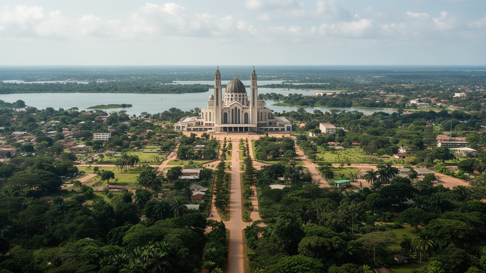
🇨🇮 コートジボワール / 西アフリカ / World City Atlas
内陸の湖と大通り、巨大聖堂、行政施設が広い空間に置かれた政治首都です。経済都市アビジャンとは違う速度で、国家の象徴、農村社会、教育、宗教、移動の課題が重なります。
都市の骨格
ヤムスクロは、巨大な道路、湖、大聖堂、行政施設がゆったり置かれた首都です。政治上の中心でありながら、国内経済の多くは海岸のアビジャンに残り、二重首都の関係が都市の性格を決めています。
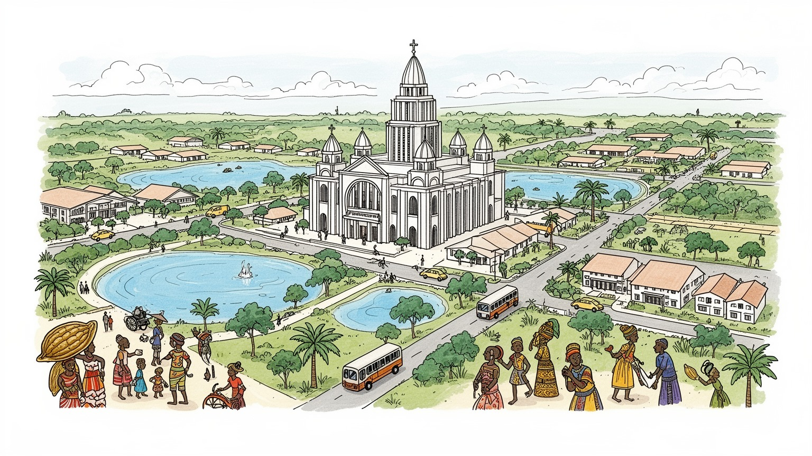
ヤムスクロは内陸の政治首都ですが、経済と外交の多くはアビジャンに残ります。首都移転の象徴性、道路で結ぶ南北軸、国家統合の意思が、広い街路と行政用地に見えます。内陸を国家地図の中心へ戻す役割を担います。
行政、教育、建設、農産加工、商業、交通が雇用を支えます。カカオやヤムイモの産地に近く、学生、公務員、職人、市場商人、運転手が都市を動かします。大都市型産業よりも、公共機能と周辺農村の結びつきが強いです。
巨大な平和の聖母大聖堂が都市の象徴ですが、信仰は教会、モスク、伝統的儀礼、家族の祭りにも広がります。バウレ社会の記憶、首都建設の物語、学校生活が、静かな都市文化を作っています。市場の会話も文化です。
湖、大通り、大聖堂、庭園、学校、市場が日常の目印です。観光客には記念建築が目立ちますが、住民には水、雇用、交通、教育、医療、若者の進路が大切です。ゆったりした空間の中に地方首都の課題もありますよ。
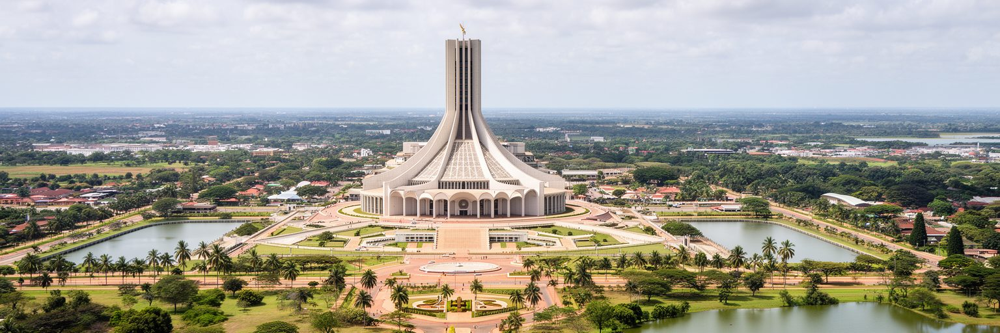
ヤムスクロを理解する入口は、首都でありながら最大の経済都市ではないという二重性です。コートジボワールの政治首都はここに置かれていますが、企業、港湾、金融、外交実務、国際便の多くは今もアビジャンへ集中します。そのためヤムスクロの首都性は、毎日の権力集中というより、国家が内陸へ向けて示した象徴として現れます。広い道路、記念建築、行政用地、湖の周囲の余白は、人口密度の高い商業都市とは違う時間を作ります。首都移転は、初代大統領フェリックス・ウフェボワニの出身地を国家の中心へ置く政治的な行為でもありました。都市は国民統合、地域均衡、個人の権威、近代化の期待を同時に背負います。アビジャンとの距離は弱点であると同時に、海岸部だけに依存しない国家地図を描く試みでもあります。式典や行政会議の場として使われるたびに、広い街路は国の方向を示す舞台になります。一方で、象徴が生活改善へ届くには、学校、病院、雇用、交通を日々整える地道な政策が必要です。首都であることが住民の誇りになるには、記念施設の維持と同じくらい、行政窓口の使いやすさや若者の働き口が大切です。ヤムスクロを歩くと、完成した首都というより、国家の理想が先に配置され、日常生活がその隙間を少しずつ埋めている都市に見えます。その未完の感じも都市の個性です。
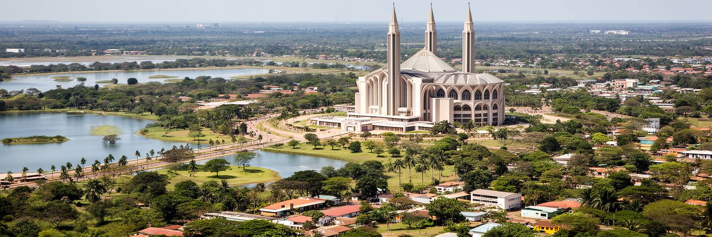
ヤムスクロの都市空間は、海岸都市の密度ではなく、内陸の平原、人工湖、長い大通り、低い建物の余白で感じられます。湖は景観を作るだけでなく、都市の記憶と観光の目印になり、水辺の庭園やワニのいる池は訪問者の印象を強めます。中心部には行政施設や記念建築が離れて配置され、徒歩より車やバイク、乗合交通で動く距離感があります。道路が広いほど、都市は整然として見えますが、住民の日常には日陰、歩道、公共交通、夜間の安全、雨季の排水が重要になります。周辺には村落、農地、学校、宗教施設が続き、都市と農村の境目は鋭く切れません。乾季には赤土と乾いた草が目立ち、雨季には緑が濃くなり、同じ道でも風景が変わります。ヤムスクロの広さは巨大都市の混雑とは違う課題を生みます。施設が分散するほど、通学、通院、買い物、行政手続きの移動負担が増えます。新しい住宅や公共施設が離れて建つほど、街は伸びますが、維持する道路や照明も増えます。都市計画では、見通しの良い大通りだけでなく、歩行者が暑さを避けて安全に移動できる細かな環境が問われます。湖や緑地を単なる景観にせず、涼しさ、雨水管理、休日の居場所として使えるかも都市の質を左右します。空間の余裕は魅力である一方、都市サービスを細かく届ける難しさも示しています。広い街ほど、近さを作る工夫が必要です。
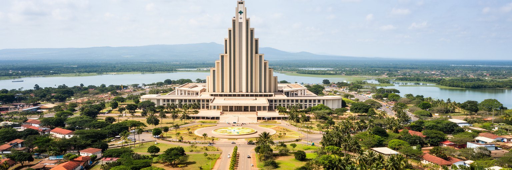
平和の聖母大聖堂は、ヤムスクロを世界地図に載せる最も強い建築です。巨大なドーム、列柱、ステンドグラス、広場は、首都の象徴性とカトリック信仰を壮大な形式で見せます。ただし、この都市の宗教生活を聖堂だけで語ると見落としが生まれます。住民の日常には、教会、モスク、家庭の祈り、葬送、結婚式、村の儀礼、聖人の祝日、イスラムの行事、伝統的な信仰が重なります。巨大聖堂は国家的な記念建築であり、観光資源であり、政治権力の時代精神を映す装置でもあります。一方、宗教が生活を支える場面はもっと小さく、病気の相談、家族の節目、隣人との助け合い、学校や共同体の行事にあります。日曜の礼拝、金曜の祈り、葬儀の準備は、家族と近所を結び直す時間でもあります。大きな建物が遠くから人を引き寄せる一方で、身近な信仰施設は相談、教育、相互扶助の場として働きます。宗教の多様さは、祝日の過ごし方、食、学校行事、近所付き合いにも表れ、互いの慣習を知る機会になります。ヤムスクロでは、宗教建築の圧倒的なスケールと、地域社会の細かな信仰実践が同じ都市に並びます。大聖堂の威容を見るだけでなく、その周囲で誰が祈り、誰が働き、どのように維持されているかを見ると、記念碑の奥にある生活の厚みが見えてきます。祈りは観光より長く街に残る生活の時間です。
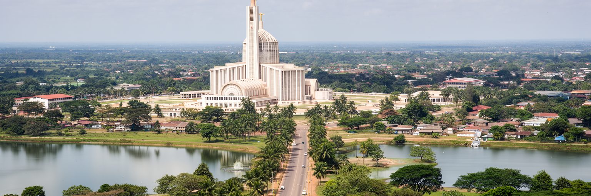
ヤムスクロの政治的位置は、アビジャンとの関係を抜きに読めません。アビジャンは港、金融、企業、大学、メディア、国際機関、外交の実務を抱える巨大都市で、国家経済の入口として動き続けています。ヤムスクロは法的な首都であり、国家儀礼や行政施設を持ちますが、全ての首都機能が日常的に移ったわけではありません。この二重構造は、都市間の競争ではなく、国家の重心が複数に分かれている状態として理解する必要があります。道路で結ばれた二つの都市の間を、公務員、政治家、学生、商人、家族が移動します。移動時間と交通費は、首都性を実際に使えるかどうかを左右します。ヤムスクロにとって重要なのは、象徴だけでなく、行政サービス、教育、医療、雇用を周辺地域へ届ける拠点になることです。省庁や機関がどこまで移るかは、職員の住宅、学校、病院、通信、出張のしやすさとも関係します。首都機能の移転は建物を造るだけでは終わらず、働く人と家族が暮らせる都市条件を整える過程です。二つの都市を行き来する交通が安定すれば、象徴首都と経済首都の分業はより現実的になります。逆に移動が高く不便なら、首都性は限られた人だけのものになります。アビジャンが国際経済の窓であるなら、ヤムスクロは内陸の国家統合を可視化する場所です。その役割が住民の生活向上へ結びつくかが、政治首都としての成熟を決めます。
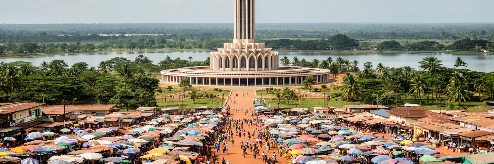
ヤムスクロの経済は、高層ビルの集中よりも周辺農村との往来で動きます。コートジボワールはカカオ、コーヒー、カシューナッツ、ヤムイモ、米、野菜などの農産物に支えられ、内陸の市場は生産地と消費地を結びます。ヤムスクロでも、市場商人、運転手、修理工、加工業者、学校や行政の職員が、農村から来る商品と人の流れを受け止めます。農産物の価格、道路の状態、雨季の輸送、燃料費、保存設備は、家庭の収入と食卓に直結します。若者にとって農業は家族の基盤でありながら、都市で学び、別の仕事を探すための出発点でもあります。公共工事や建設は雇用を生みますが、長期的な仕事を広げるには、加工、物流、教育、技術訓練が必要です。小規模な倉庫、精米、食品加工、冷蔵、修理、金融サービスが増えるほど、農産物は単に通過する商品ではなく地域の所得になります。市場で働く女性や若い運転手の収入も、都市経済を測る大切な指標です。携帯決済、共同組合、道路補修、価格情報が整えば、小さな商いでも交渉力を持ちやすくなります。農村と都市の距離を縮める仕組みが、内陸首都の雇用を広げます。ヤムスクロの市場を歩くと、国家首都の記念性とは別に、日々の交渉で成り立つ地域経済が見えます。都市の強さは、首都の肩書きだけでなく、周辺農村の収入をどれだけ安定させ、若い人が残れる仕事を作れるかにも表れます。
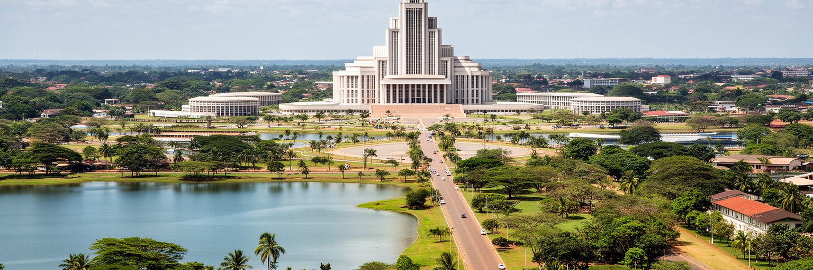
ヤムスクロは政治首都であるだけでなく、学校と若者の都市でもあります。高等教育機関、職業訓練、宗教系学校、一般の中等教育は、周辺地域から学生を集め、都市の日常に若い時間を与えます。学生は寮、下宿、家族の家、市場、バイクタクシー、食堂を使いながら、将来の仕事を探します。教育は社会移動の希望ですが、卒業後に十分な雇用がなければ、アビジャンや国外へ向かう圧力も強まります。公務員、教員、技術者、医療職、農業関連の専門職を育てることは、首都機能を生活に近づける条件です。学校がある街では、本屋、コピー店、食堂、通信サービス、住宅需要も生まれます。しかし、学費、交通、言語、家庭の収入、ジェンダーの期待は進路を左右します。女子学生が安全に通える道、家族が負担できる寮費、実習先や就職相談の有無は、統計に出にくい重要な条件です。教育機関と地元企業、行政、農業団体が結びつくほど、学びは地域の仕事へつながります。図書館、通信環境、奨学金、実習機会が整うと、地方出身の学生も都市で挑戦しやすくなります。学校都市としての力は、教室外の支援の厚さにも表れます。ヤムスクロの若者を見ることは、国家の未来を抽象的に語ることではなく、教室から職場へ移る具体的な道があるかを問うことです。都市が若い人を育てるだけでなく、育った人が戻って働ける環境を作れるかが、内陸首都の持続性を決めます。
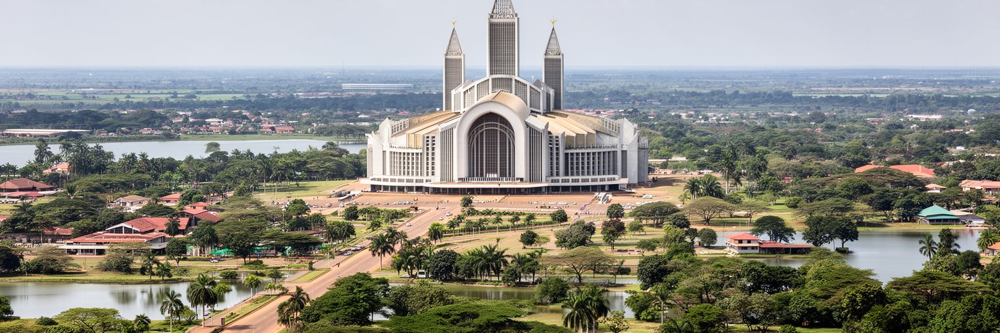
ヤムスクロ周辺はバウレの社会と深く結びつく地域です。都市の公式な顔には行政施設や聖堂が並びますが、生活の基礎には村、家族、土地、首長制、祭礼、言語、食、親族関係があります。首都建設の物語は、国民国家の物語であると同時に、特定の地域社会の記憶とも重なります。そのためヤムスクロを読むときは、国家の象徴が地域の歴史の上に置かれていることを忘れない視点が必要です。市場の会話、葬儀や結婚式の準備、日曜の礼拝、イスラムの行事、伝統的な音楽や踊り、食材の選び方には、都市化しても続く共同体の感覚があります。同時に、国内各地や近隣国から来た人々も暮らし、バウレだけの都市ではありません。首都であることは、地域性を消すのではなく、外から来る人との調整を増やします。言語の違い、宗教の違い、出身地の違いは、市場や学校や職場で毎日調整されます。地域の祭礼や家族行事は、移住してきた人にとっても近所を知る入口になり、都市の信頼を作ります。文化を観光向けの演目だけにせず、日常の礼儀、食事、助け合い、若者の音楽として見ると、街の輪郭が豊かになります。ヤムスクロの文化は、巨大記念建築の華やかさより、家族と村と学校と宗教施設を行き来する生活の中で厚みを持ちます。その重なりが、静かな都市に独自の表情を与えています。首都の顔と地域の顔が並ぶ点が魅力です。
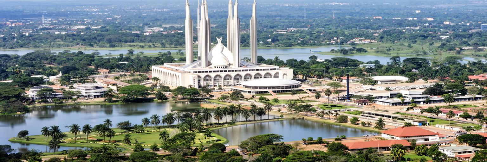
ヤムスクロの日常は、広い道路、学校の登下校、市場の買い物、行政手続き、礼拝、バイクや車での移動、雨季のぬかるみ、乾季のほこりの中にあります。大都市のような過密は少なくても、生活の課題が軽いわけではありません。水道、電力、医療、公共交通、ゴミ処理、排水、住宅の質、若者の仕事は、住民が都市を評価する基準です。施設が分散する街では、病院や学校へ行く距離が負担になり、車を持たない人ほど移動の選択肢が限られます。市場では現金収入、物価、燃料費が家庭の食事を左右し、雨季には道路の状態が物流と通学に影響します。首都らしい大通りや記念建築は外から見る印象を作りますが、住民にとっての都市の価値は、毎日の用事がどれだけ無理なく済むかで決まります。夜に安心して歩ける道、日中に休める木陰、子どもが遊べる場所、言葉に不安がある人も使える窓口は、派手ではなくても生活を支えます。地方都市では、近所の助け合いと公共サービスの距離が暮らしの安定を左右します。家族の看病、出産、学校の手続き、農村からの親族の滞在など、日常の用事は行政区画を越えて動きます。都市サービスは住民だけでなく、周辺から来る人にも開かれている必要があります。ヤムスクロの暮らしを読むには、壮大な空間と生活サービスの細かさを同時に見る必要があります。広い街を便利な街に変えるには、交通、日陰、歩行者空間、近所の医療、若者の雇用を地道に整えることが欠かせません。
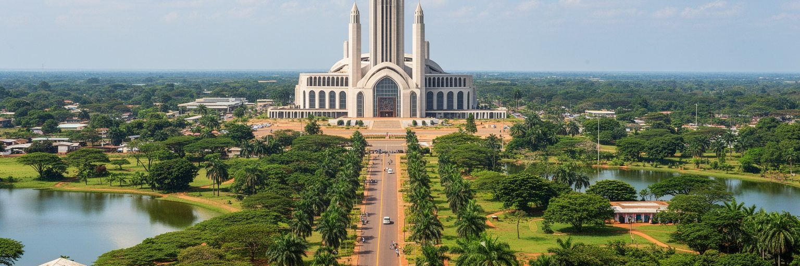
ヤムスクロ観光は、平和の聖母大聖堂、湖、広い大通り、記念施設、庭園、市場を結んで成り立ちます。訪問者は、アビジャンの海岸都市的な混雑とは違う、ゆったりした首都の風景に驚きます。大聖堂は写真に残る圧倒的な名所ですが、観光を一つの建物だけに閉じると、都市の生活は見えません。湖畔を歩き、市場で食材や布を眺め、学校や行政地区の周辺を通り、住宅地の道を進むと、記念建築と日常の距離が分かります。観光はホテル、ガイド、運転手、清掃、警備、飲食、小売の仕事を生みますが、訪問者の数が安定しなければ雇用も安定しません。首都の象徴性を観光に生かすには、交通案内、多言語情報、歩きやすさ、衛生、安全、文化への敬意が必要です。写真を撮る場所だけでなく、説明を聞き、地域の店で食べ、過剰な演出なしに街を歩ける仕組みがあると、滞在は深くなります。観光収入が住民の雇用や施設維持へ戻ることも重要です。日帰りで通過するだけでなく、一泊して夕方の市場や朝の湖畔を見る旅が増えれば、都市に落ちる収入も広がります。ヤムスクロは大量消費型の観光地ではなく、国家の記念、宗教建築、内陸の日常を静かに読む場所です。訪問者にとって大切なのは、壮大さを眺めるだけでなく、その建物がなぜここにあり、住民がどのように使う都市なのかを考えることです。
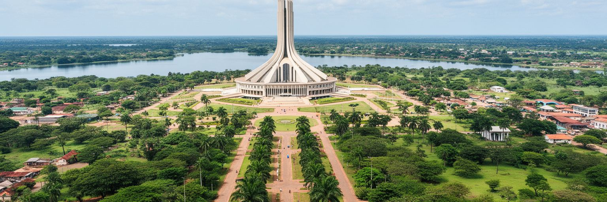
ヤムスクロの社会課題は、首都の肩書きだけでは解けません。若者の雇用、教育から職場への移行、公共交通、医療へのアクセス、住宅、女性の安全、近隣国から来た人との共生、行政サービスの届き方が、日々の都市を左右します。熱帯サバナ気候の下では、雨季の排水、道路の傷み、感染症、農産物の輸送、乾季の暑さと水の管理も重要です。気候の変化は、農村の収入を不安定にし、都市へ向かう移動を増やす可能性があります。広い道路や記念建築は都市の格式を示しますが、強い雨を受け止める排水、日陰、公共トイレ、歩道、地域医療がなければ、住民の安心にはつながりません。社会問題は貧困だけでなく、情報、移動、学校、仕事へ届く道の差として現れます。暑い季節に屋外で働く人、遠くの学校へ通う子ども、病院までの交通費を気にする家族は、都市の弱点を早く経験します。防災や福祉は特別な政策ではなく、毎日の移動と暮らしを守る基盤です。乾季の水管理と雨季の排水を同時に考えることは、農業、保健、道路維持を一つの政策として扱うことでもあります。弱い立場の人ほど気候の影響を受けやすいです。ヤムスクロが政治首都として信頼されるためには、象徴的な建物を保つだけでなく、周辺の村や新しい住宅地へ基本サービスを広げる必要があります。気候と社会政策を一緒に扱えるかが、内陸都市の未来を大きく左右します。
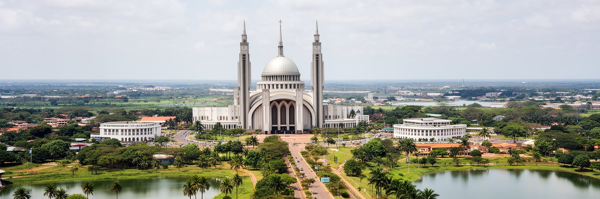
ヤムスクロは、人口規模や経済力だけで測ると見落とされやすい都市です。しかし、世界の都市を読むうえでは、非常に重要な問いを持っています。国家はなぜ首都を移すのか、象徴的な建築は住民生活とどう関わるのか、経済都市と政治首都が分かれると行政はどう動くのか、内陸の農村圏は国家地図の中でどのように扱われるのかという問いです。ヤムスクロには、アビジャンの港湾経済とは違う、西アフリカ内陸の時間があります。湖、大通り、大聖堂、学校、市場、村落、行政施設は、近代国家の理想と地域社会の日常を一つの風景に並べます。都市の余白は未完成の印象を与えることもありますが、その余白こそが、首都という構想と住民の生活がまだ交渉を続けている証拠です。大都市の密度や速度だけを世界都市の基準にすると、このような政治的な実験都市の意味は見えにくくなります。ヤムスクロは、国家の記念性が日常の雇用、教育、交通、信仰へ届くかを静かに試しています。ここでは、壮大な建築の評価と、住民が毎日使う市場や学校の評価を切り離せません。両方を同じ地図で見ると、首都の意味が具体的になります。ヤムスクロを読むことは、世界都市を金融や高層ビルだけでなく、象徴、宗教、農業、教育、移動、社会サービスから考え直すことです。静かな首都の中に、国家建設の希望と矛盾がはっきり見えます。